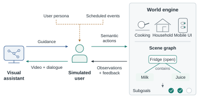
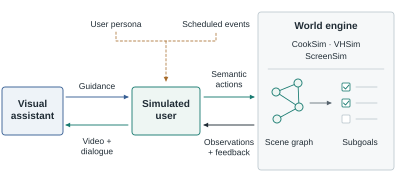

Interactive Visual Gym · Figure study · 22 September 2026
A paper figure, at paper size.
Four system-overview designs built around one relationship: the assistant communicates with the user; only the user acts on the world.

Figure 1. Interactive Visual Gym. The assistant monitors user-view video and dialogue and provides guidance; only the simulated user executes actions in the world engine. User personas and scheduled events condition user behavior. Three executable task environments expose semantic actions and track subgoal completion through scene-graph state. Illustrated subgoals: store milk, store juice, close the fridge.
Default preview: 528 CSS pixels = 5.5 inches at 96 dpi. Physical size depends on your display and browser zoom. Use the PDF at 100% for a print-size check; on small screens, the figure scrolls rather than shrinking its labels.
What changed
Interfaces, not inventories
The arrows carry the explanation. Action signatures, example utterances, and evaluation details no longer compete with the system structure.
Readable in the manuscript
Every diagram label is at least 8 pt at the final width. The previous draft's smallest label scaled to about 3.3 pt.
One level of engine detail
The world panel shows task domains and state-based progress. No nested prompt cards, API lists, or paragraphs inside nodes.
Compare all four at the same paper width



Editable sources and how we can work on them together
The publication masters are layered SVG files, exported to vector PDF with Inkscape. Text is preserved as text, not converted to outlines. The browser-editing copies use separate native draw.io shapes, labels, and arrows—not one flattened image.
- Edit a copy: opens the public source in diagrams.net. No account is needed to open it. Save the edited
.drawiofile locally or to a storage provider you connect. - Edit shared file: opens the version stored in GitHub. Saving back requires GitHub authorization and write access. This supports versioned collaboration, not simultaneous co-editing.
- For the paper: use the supplied PDF at
width=\linewidth. Online edits do not automatically update the PDF; we should export and inspect it again after changes.
Figma was discoverable but not connected during this revision. No Figma document or live collaboration session has been created.
Paper-repository source files ↗ · Production notes and image provenance
Design references and content boundaries
The layouts were informed by actor/interface overviews in Collaborative Gym and τ-voice, the overview/detail separation in PARTNR, and user conditioning in UserVille. The drawings are original; no source artwork was copied.
A and D use schematic domain/state illustrations. B and C use authentic current simulator captures. Their miniature UI text is not required to interpret the figure. The labeled graph illustrates a current VHSim task: milk and juice have been stored, while the fridge remains open. The three subgoal checks correspond to the two placements and fridge closure. This is a schematic state, not the pictured screenshot or an experimental result.